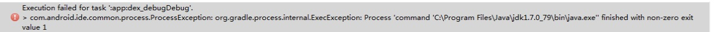

安装 Android 探针后启动发生异常：finished with non-zero exit value 1解决办法
错误描述
安装 Android 探针后启动发生异常，错误如下：
Error:Execution failed for task ':app:dexDevDebug'. com.android.ide.common.process.ProcessException:org.gradle.process.internal.ExecException: Process 'command 'D:/Java/jdk1.7.0_79/bin/java.exe'' finished with non-zero exit value 1

版本信息
（1）探针类型：android sdk
（2）探针版本：2.0.3
（3）操作系统版本：Windows 7
（4）开发工具：Android Studio 1.3.2
（5）JRE：jre1.7.0_79
（6）JDK：jdk1.7.0_79/jdk1.8.0_05/jdk1.8.0_45
（7）JVM：Java HotSpot(TM) 64-Bit Server VM
解决办法
这个问题是由于 Android Studio 编译时造成的，在启动之后可以在任务管理器中观察到studio.exe和java.exe运行时占用内存量都很高，导致内存占用很大才导致的这个问题，因此修改配置把内存调高即可。
解决办法：
在 app 下的 build.gradle 配置文件中加入如下配置：
dexOptions {
javaMaxHeapSize "xxg"
}
"xxg"可根据自己电脑配置修改，如："4g"，代表 JVM最大 Heap 内存为4G。